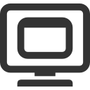

Welcome to Nuggit. U source for JS apps WOW
these apps Generally Recognized As Safe (GRAS) by the Federal Government of Fantasia (FGF)*** not rly; app at u own risk
these icons will actually live on users' home screen and Nuggit won't track what's "installed"; the idea is to start a SHA1 whitelist of apps that aren't MALCODEish -- let there be a thousand lists, but the best one will be the default list for this, the Nuggit Bargin Bin (N.B.B.)
